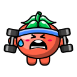
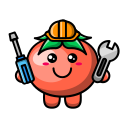

Cronómetro Pomodoro
Foco

25
:
00

Configurações
Tempo de Foco:
15 minutos
25 minutos
30 minutos
45 minutos
60 minutos
Personalizado...
Tempo de Pausa:
5 minutos
10 minutos
15 minutos
Personalizado...
Ciclos até à pausa longa:
2 ciclos
3 ciclos
4 ciclos
5 ciclos
Pausa longa:
10 minutos
15 minutos
20 minutos
30 minutos
Personalizado...
Guardar
Ciclo
1
/
4
Próxima pausa longa em:
3
ciclos